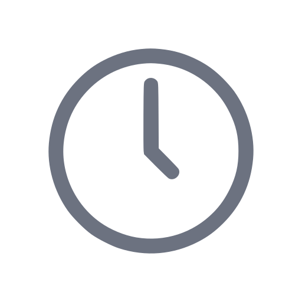

<!-- Control buttons component -->
<div class="component gap-1 justify-between">
  <div class="flex items-center gap-2">
    <button class="icon-wrapper__controller">
      <div class="initial">P</div>
    </button>
    <span class="text-gray-300">|</span>
    <button class="details gap-1">
      
      <span class="time">0 min</span>
    </button>
    <span class="text-gray-300">|</span>
    <button class="details">
      <div class="red-circle-status bg-red-400"></div>
    </button>
    <span class="text-gray-300">|</span>
    <button class="details gap-2">
      
      <span class="time">0</span>
    </button>
  </div>
  <div class="flex items-center gap-4">
    <button class="flex items-center justify-center">
      
    </button>
    <button class="flex items-center justify-center">
      
    </button>
    <button class="more-options font-bold">⋮</button>
  </div>
</div>
